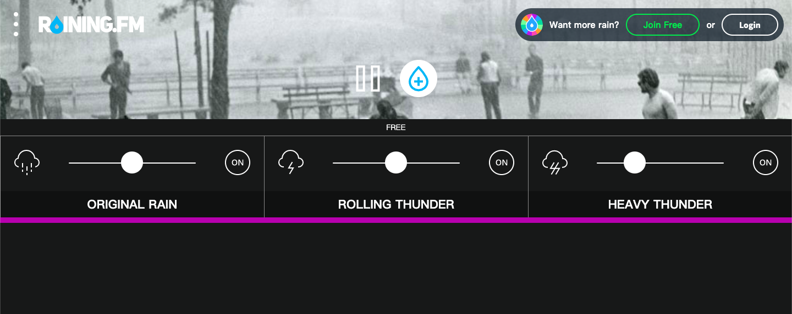
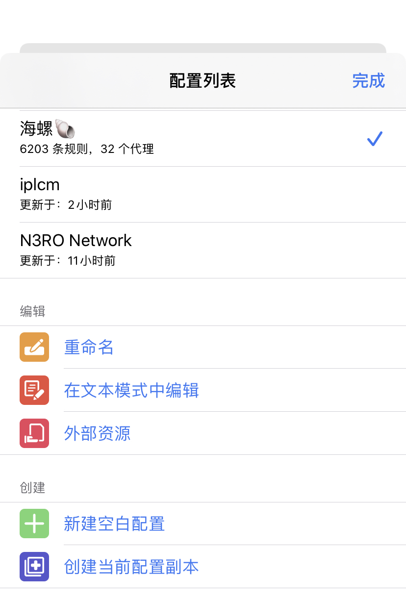
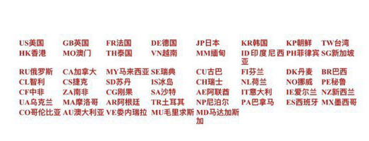

<?xml version="1.0" encoding="UTF-8"?>
<rss version="2.0"
xmlns:content="http://purl.org/rss/1.0/modules/content/"
xmlns:dc="http://purl.org/dc/elements/1.1/"
xmlns:slash="http://purl.org/rss/1.0/modules/slash/"
xmlns:atom="http://www.w3.org/2005/Atom"
xmlns:wfw="http://wellformedweb.org/CommentAPI/">
<channel>
<title>毒奶博主丨欢迎使用代理访问本站。 - 软件百科</title>
<link>https://limbopro.xyz/category/software-skills/</link>
<atom:link href="https://limbopro.xyz/feed/category/software-skills/" rel="self" type="application/rss+xml" />
<language>zh-CN</language>
<description>这样用软件，事半功倍。</description>
<lastBuildDate>Fri, 03 Jan 2020 14:03:00 +0800</lastBuildDate>
<pubDate>Fri, 03 Jan 2020 14:03:00 +0800</pubDate>
<item>
<title>Nmap丨暗黑互联网扫描器丨IPv4端口扫描</title>
<link>https://limbopro.xyz/archives/nmap.html</link>
<guid>https://limbopro.xyz/archives/nmap.html</guid>
<pubDate>Fri, 03 Jan 2020 14:03:00 +0800</pubDate>
<dc:creator>毒奶</dc:creator>
<description><![CDATA[主理人说为了安全，给你的网站套个CDN（例如 Cloudflare），将源站服务器隐藏在其后；CensysCensys 可以看成是前端集成（非实时），为用户提供数据索引支持；而它背后使用的工具正...]]></description>
<content:encoded xml:lang="zh-CN"><![CDATA[
<h2>主理人说</h2><p>为了安全，给你的网站套个CDN（例如 <a href="https://cloudflare.com/">Cloudflare</a>），将源站服务器隐藏在其后；</p><h2>Censys</h2><p></p><p><a href="https://censys.io/">Censys</a> 可以看成是前端集成（非实时），<strong>为用户提供数据索引支持</strong>；而它背后使用的工具正是自己开发的<strong><a href="https://zmap.io/">ZMap</a></strong>（比NMap快，号称一个小时扫描整个互联网IPv4地址；）我目前在用<a href="https://nmap.org/">Nmap</a>，慢却精。</p><p>不久前，<a href="https://censys.io/">Censys</a>域名查询结果提供了域名的排名信息（<strong>Alexa Rank</strong>）；</p><h3>用处及用法</h3><p><a href="https://censys.io/ipv4">Censys</a> 提供三种类型的查询：</p><table><thead><tr><th align="center">模式</th><th align="center">备注</th></tr></thead><tbody><tr><td align="center">IPv4 Hosts</td><td align="center">IP查询</td></tr><tr><td align="center">Websites</td><td align="center">域名查询</td></tr><tr><td align="center">Certificates</td><td align="center">证书查询</td></tr></tbody></table><p>*<a href="https://censys.io/ipv4">Censys</a> 是无时无刻不在扫描联网设备的；每次扫描都会记录到数据库以被后期索引取出分析；所以，用Censys可以查到域名下有多少子域名及其对应服务器IP（如果DNS解析时没有套CDN，则源站服务器有很大机会被发现并记录。）</p><h2>ZMap</h2><p>译自英文-ZMap是一种免费的开放源代码安全扫描器，它是作为Nmap的更快替代品而开发的。ZMap专为信息安全研究而设计，可用于白帽子和黑帽子的目的。该工具能够<strong>发现漏洞及其影响</strong>，<strong>并检测受影响的物联网设备</strong>。ZMap使用每秒1 GB的网络带宽，<strong>可以在一个端口上一个小时内扫描整个IPv4地址空间</strong>。 维基百科（英文)</p><h3>ZMap安装</h3><table><thead><tr><th>OS</th><th> </th></tr></thead><tbody><tr><td>Debian and Ubuntu</td><td><code>sudo apt install zmap</code></td></tr><tr><td>Fedora, CentOS, and RHEL</td><td><code>sudo yum install zmap</code></td></tr><tr><td>Gentoo</td><td><code>sudo emerge zmap</code></td></tr><tr><td>macOS (using <a href="https://brew.sh/">Homebrew</a>)</td><td><code>brew install zmap</code></td></tr><tr><td>Arch Linux</td><td><code>sudo pacman -S zmap</code></td></tr></tbody></table><p><strong>Instructions on building ZMap from source</strong> can be found in <a href="https://github.com/zmap/zmap/blob/master/INSTALL.md">INSTALL</a>.</p><h3>Usage</h3><p>A guide to using ZMap is found in our <a href="https://github.com/zmap/zmap/wiki">GitHub Wiki</a>.</p><h2>NMap</h2><p>Nmap是一款用于网路发现和安全审计的网路安全工具，它是自由软体。软体名字Nmap是Network Mapper的简称。通常情况下，Nmap用于：检测目标主机是否在线、端口开放情况、侦测运行的服务类型及版本信息、侦测操作系统与设备类型等信息。 它是网络管理员必用的软件之一，用以评估网络系统安全。</p><p><strong>Nmap 是不少<a href="https://zh.wikipedia.org/wiki/">黑客</a>及<a href="https://zh.wikipedia.org/wiki/">脚本小子</a>爱用的工具</strong> 。<a href="https://zh.wikipedia.org/wiki/">系统管理员</a>可以利用Nmap来探测工作环境中未经批准使用的服务器，黑客通常会利用Nmap来搜集目标电脑的网络设定，从而计划攻击的方法。</p><p><strong>Nmap通常用在信息搜集阶段，用于搜集目标机主机的基本状态信息</strong>。扫描结果可以作为<a href="https://zh.wikipedia.org/w/index.php?title=">漏洞扫描</a>、<a href="https://zh.wikipedia.org/wiki/">漏洞利用</a>和<a href="https://zh.wikipedia.org/wiki/">权限提升</a>阶段的输入。例如，业界流行的漏洞扫描工具<a href="https://zh.wikipedia.org/wiki/Nessus">Nessus</a>与漏洞利用工具<a href="https://zh.wikipedia.org/wiki/Metasploit">Metasploit</a>都支持导入Nmap的<a href="https://zh.wikipedia.org/wiki/XML">XML</a>格式结果，而Metasploit框架内也集成了Nmap工具（支持Metasploit直接扫描）。</p><p><a href="https://zh.wikipedia.org/zh-tw/Nmap">维基百科</a></p><p><strong>Nmap 基本语法</strong></p><pre><code>nmap [ &lt;扫描类型&gt; ...] [ &lt;选项&gt; ] { &lt;扫描目标说明&gt; }</code></pre><p>全面进攻性扫描（包括各种主机发现、端口扫描、版本扫描、OS扫描及默认脚本扫描）</p><pre><code>nmap -A -v target_ip</code></pre><p>Ping扫描</p><pre><code>nmap -sn -v target_ip</code></pre><p>快速端口扫描</p><pre><code>nmap -F -v target_ip</code></pre><p>版本扫描</p><pre><code>nmap -sV -v target_ip </code></pre><p>操作系统扫描</p><pre><code>nmap -O -v target_ip</code></pre><p>*Nmap 常被跟评估系统漏洞软件Nessus混为一谈。Nmap 以隐秘的手法，避开闯入检测系统的监视，并尽可能不影响目标系统的日常操作。</p><h2>联系主理人</h2><p>1.关注频道 <a href="https://t.me/limboprossr">https://t.me/limboprossr</a> 不失联；<br>2.<code>毒奶粉</code>们（我管我的Fans）可联系 <a href="../../../usr/uploads/2019/10/3453243330.png">TG机器人</a> 或发送 <a href="../../../usr/uploads/2019/10/3453243330.png">邮件</a> 获取帮助；</p><p>3.或点击<code>本页面右下角</code>的聊天按钮联系；</p>
]]></content:encoded>
<slash:comments>0</slash:comments>
<comments>https://limbopro.xyz/archives/nmap.html#comments</comments>
<wfw:commentRss>https://limbopro.xyz/feed/archives/nmap.html</wfw:commentRss>
</item>
<item>
<title>Raining.fm / 小睡眠丨助眠神器 App（白噪音/ASMR）</title>
<link>https://limbopro.xyz/archives/5674.html</link>
<guid>https://limbopro.xyz/archives/5674.html</guid>
<pubDate>Sun, 01 Dec 2019 22:46:00 +0800</pubDate>
<dc:creator>毒奶</dc:creator>
<description><![CDATA[via https://raining.fm/本文隶属于 软件百科 分类，点击分类名称可以查看更多相关文章；[post cid="3235" cover="https://limbopro.xy...]]></description>
<content:encoded xml:lang="zh-CN"><![CDATA[
<p></p><p>via <a href="https://raining.fm/"><a href="https://raining.fm/">https://raining.fm/</a></a></p><p>本文隶属于 <a href="../../../category/software-skills/index.html">软件百科</a> 分类，点击分类名称可以查看更多相关文章；</p><p>[post cid="3235" cover="https://limbopro.xyz/usr/uploads/2019/10/3930420692.png"/]</p></img><p class="more"><a href="../../../archives/5674.html" title="Raining.fm / 小睡眠丨助眠神器 App（白噪音/ASMR）">[...]</a></p>
]]></content:encoded>
<slash:comments>0</slash:comments>
<comments>https://limbopro.xyz/archives/5674.html#comments</comments>
<wfw:commentRss>https://limbopro.xyz/feed/archives/5674.html</wfw:commentRss>
</item>
<item>
<title>Telegram 贴纸（表情包）制作方法以及如何将已有表情包下载到本地</title>
<link>https://limbopro.xyz/archives/4710.html</link>
<guid>https://limbopro.xyz/archives/4710.html</guid>
<pubDate>Sat, 09 Nov 2019 00:20:00 +0800</pubDate>
<dc:creator>毒奶</dc:creator>
<description><![CDATA[本文隶属于 电报奇闻 分类，点击分类名称查看更多有趣奇闻；主理人说我没有用过line，但我想目前世界范围内没有比Telegram拥有更多表情包的社交软体了。多是好事，也是坏事，表情包一多便找不着...]]></description>
<content:encoded xml:lang="zh-CN"><![CDATA[
<p><br>本文隶属于 <a href="../../../category/telegram-anecdote/index.html">电报奇闻</a> 分类，点击分类名称查看更多有趣奇闻；</p><h2>主理人说</h2><p>我没有用过line，但我想目前世界范围内没有比Telegram拥有更多表情包的社交软体了。多是好事，也是坏事，<code>表情包一多便找不着北</code>，电报的表情包<code>收藏栏只有最多5个显示</code>（最近添加到收藏的5个），想调用前不久添加收藏的表情的时候就很<code>尴尬</code>了，因为被后面收藏的表情挤掉了。</p><p>如你所见，很多群组或个人都拥有自己的表情包，浓厚的个人特质。</p><h2>Telegram 贴纸（表情包）制作方法</h2><p></p><p>via <a href="https://t.me/Stickers">毒奶博主</a></p><h3>一些技术要求和步骤概要</h3><p>0.表情包发布机器人：<a href="https://t.me/Stickers">https://t.me/Stickers</a><br>1.基础PS知识；<br>2.制作表情并保存为512*512像素大小的PNG图片；<br>3.以文件的方式发送制作好的像素大小为<code>512px*512px</code>的png图片到<a href="https://t.me/Stickers">贴纸机器人</a>；<br>4.完成并发布；</p><h2>贴纸机器人</h2><p>@Stickers <a href="https://t.me/Stickers">https://t.me/Stickers</a></p><h2>详细步骤</h2><h3>第一步 进入Stickers</h3><p></p><p>进入 @Stickers <a href="https://t.me/Stickers">https://t.me/Stickers</a>，点击输入框 <code>/</code>，点击<code>/newpack</code>命令，新建表情包；*其他命令作用自行意会，<code>/addsticker</code> 为已有表情包添加新表情；</p><h3>第二步 新建表情包</h3><p></p><p>如上图，点击<code>newpack</code>后，输入你的表情包名字，中英文均可（没事后期可以改）；</p><h3>第三步 发送PNG图片</h3><p><br>设计好你的表情，并保存为<code>PNG</code>格式，发送给<code>机器人</code>，<code>/done</code>完成；</p><h3>第四步 发布表情包</h3><p></p><p>以上，从制作到发布表情包结束。</p><hr><h1>下载已有表情包</h1><p>如何打包并下载自己喜欢的表情包，或参考此PUSH：<a href="https://t.me/limboprossr/390">https://t.me/limboprossr/390</a></p><h2>表情包打包机器人</h2><p>@stickerset2packbot <a href="https://t.me/stickerset2packbot">https://t.me/stickerset2packbot</a></p><h2>步骤概要</h2><p></p><p>跟发布表情包类似，进入 <a href="https://t.me/stickerset2packbot">@stickerset2packbot</a> 聊天界面，<code>/newpack</code>，发送你想要打包的表情包（最多200个），<code>/finish </code>，然后就会自动打包了。</p><p>下载压缩包下来后，解压，把图片格式改为PNG格式就可以用来添加到自己的表情包里了。</p><p>*不需要执行<code>/newpack</code>命令，单独发表情也是可以的，表情一个个下载。</p><h2>附注</h2><p>毒奶博主：<a href="https://t.me/addstickers/limbopro">https://t.me/addstickers/limbopro</a></p>
]]></content:encoded>
<slash:comments>0</slash:comments>
<comments>https://limbopro.xyz/archives/4710.html#comments</comments>
<wfw:commentRss>https://limbopro.xyz/feed/archives/4710.html</wfw:commentRss>
</item>
<item>
<title>Adguard-世界上最高级的广告拦截程序！丨黑五促销！请享受50%的折扣！           </title>
<link>https://limbopro.xyz/archives/adguard.html</link>
<guid>https://limbopro.xyz/archives/adguard.html</guid>
<pubDate>Mon, 04 Nov 2019 11:16:00 +0800</pubDate>
<dc:creator>毒奶</dc:creator>
<description><![CDATA[本文隶属于 软件百科 分类，点击分类名称可以查看更多相关文章；主理人推荐序全局广告拦截与隐私保护，不限于浏览器；价格良心，不得不承认加钱部分的功能（参见文章引用官网地址），确实很吸引人；万圣节有...]]></description>
<content:encoded xml:lang="zh-CN"><![CDATA[
<p></p><p>本文隶属于 <a href="../../../category/software-skills/index.html">软件百科</a> 分类，点击分类名称可以查看更多相关文章；</p><h2>主理人推荐序</h2><p>全局广告拦截与隐私保护，不限于浏览器；价格良心，不得不承认<code>加钱部分</code>的<code>功能</code>（参见文章引用官网地址），确实很吸引人；万圣节有35%的优惠（今年），黑五也会有优惠折扣（差别不大），支持<code>PayPal</code>支付与<code>信用卡</code>（Visa/万事达）支付；主理人建议大家只在<a href="https://adguard.com/zh_cn/welcome.html">官网</a>购买授权码，鉴于官方承诺官网购买可60天内与100%退款保证立即支付（<a href="https://adguard.com/zh_cn/license.html?">参考常见问题解答</a>）；</p><h2>活动更新</h2><h2>2019 黑色星期五促销 50% save</h2><p></p><p><strong>中文购买界面</strong>：<a href="https://adguard.com/zh_cn/license.html">https://adguard.com/zh_cn/license.html</a> （*页面底部可切换结算货币；建议不要挂代理访问该页面，否则结算货币会自动跟随代理IP所在地货币。）</p><p>怎么买：支持<code>PayPal</code>支付与<code>信用卡</code>（Visa/万事达）支付；</p><p></p><p><strong>优惠码</strong>：BF2019</p><h2><del>2019 万圣节35%优惠码</del></h2><p></p><p><strong>中文购买界面</strong>：<a href="https://adguard.com/zh_cn/license.html">https://adguard.com/zh_cn/license.html</a> （*页面底部可切换结算货币；建议不要挂代理访问该页面，否则结算货币会自动跟随代理IP所在地货币。）</p><p>怎么买：支持<code>PayPal</code>支付与<code>信用卡</code>（Visa/万事达）支付；</p><p><strong>优惠码</strong>：TREAT19</p><h3>怎么买比较优惠</h3><p>*官网购买授权码6个月内是可以申请退款的；<br>*按理说每年各大节日万圣节黑五圣诞应该都会有折扣的；</p><h2>官方介绍</h2><p>AdGuard 是摆脱恼人广告，在线跟踪，保护您远离恶意软件的最佳方式。AdGuard 使您网络冲浪更快速，更安全，更安逸！</p><h2>Adguard 的产品线介绍</h2><table><thead><tr><th align="center">产品</th><th align="center">授权</th></tr></thead><tbody><tr><td align="center">Adguard for Mac</td><td align="center">需授权码</td></tr><tr><td align="center">Adguard for Windows</td><td align="center">需授权码</td></tr><tr><td align="center">Adguard for Android</td><td align="center">部分授权</td></tr><tr><td align="center">Adguard for iOS</td><td align="center">部分授权</td></tr><tr><td align="center">Adguard for 浏览器扩展</td><td align="center">完全免费</td></tr></tbody></table><h2>购买授权前注意事项</h2><p>0.Adguard for Mac / Adguard for Windows 值得推荐；<br>1.Adguard for Android/iOS （高级版功能解锁需授权码，且会占用手机VPN通道；<code>不建议</code>大陆用户特地为iOS/Android购买授权）；<br>2.Adguard for 浏览器扩展（*浏览器扩展完全免费，配合<code>Adguard for Mac</code> / <code>Adguard for Windows</code>使用会更强大；如果你只是安装免费浏览器扩展的话我推荐开源的 <a href="../../../archives/1098.html">uBlock Origin，免费且卓越的广告拦截程序，全浏览器适用！</a>，内存占用小，广告过滤高效 ！</p><p>[post cid="1098" cover="https://limbopro.xyz/usr/uploads/2019/11/3501894609.png"/]</p><p>*浏览器扩展泛指在PC/Mac端浏览器内，手机端浏览器一般不支持安装扩展；</p><p></p><p>via <a href="../../../archives/969.html">奈菲影视</a>去广告效果截图；</p><h2>Adguard for Mac</h2><p><br>AdGuard for Mac 是世界上第一个专设计给 macOS 的独立广告拦截程序。其提供了<code>比任何浏览器扩展还多的功能</code>：拦截<code>各种浏览器</code>和<code>应用内</code>的<code>广告</code>，<code>保护您的隐私</code>。</p><p></p><p></p><p>via Adguard 程序设置及日志</p><p>*全局拦截与保护，不限于浏览器；<br><a href="https://adguard.com/zh_cn/adguard-mac/overview.html">https://adguard.com/zh_cn/adguard-mac/overview.html</a></p><h2>AdGuard for Windows</h2><p>AdGuard 是拥有可获取最佳网络冲浪体验所需全部功能的独特程序。其组合了世界上最高级的广告拦截器，<code>隐私保护模块</code>以及<code>家长控制</code> - 可<code>协同任何浏览器</code>和<code>应用工作</code>。</p><p>*全局拦截与保护，不限于浏览器；<br><a href="https://adguard.com/zh_cn/adguard-windows/overview.html">https://adguard.com/zh_cn/adguard-windows/overview.html</a></p><h2>AdGuard for Android</h2><p></p><p>AdGuard 是很独特的工具，可拦截应用和浏览器内广告，且<code>无需根权限</code>，其可保护您的隐私，帮助您管理应用。<br>易于设置社使用，而且强大高度可定制 - 其拥有广告拦截程序应有的一切。<br><a href="https://adguard.com/zh_cn/adguard-android/overview.html">https://adguard.com/zh_cn/adguard-android/overview.html</a></p><h2>AdGuard for iOS</h2><p></p><p>用于 iOS Safari 浏览器的最佳广告拦截程序。</p><p>AdGuard 能够消除 Safari 内的各种广告，保护您的隐私，减少页面载入时间。AdGuard for iOS 使用最新的广告拦截技术以确保在使用多个<code>过滤器</code>的同时获取最佳的过滤品质。<br><a href="https://adguard.com/zh_cn/adguard-ios/overview.html">https://adguard.com/zh_cn/adguard-ios/overview.html</a></p><h2>AdGuard 浏览器扩展</h2><p></p><p><a href="https://adguard.com/zh_cn/adguard-browser-extension/overview.html">https://adguard.com/zh_cn/adguard-browser-extension/overview.html</a></p><h2>Adguard 浏览器扩展下载</h2><p><a href="https://github.com/AdguardTeam/AdguardBrowserExtension">https://github.com/AdguardTeam/AdguardBrowserExtension</a> Github</p><p>for <a href="https://chrome.google.com/webstore/detail/adguard-adblocker/bgnkhhnnamicmpeenaelnjfhikgbkllg/RK%3D2/RS%3D4f_cVKY90pHwoj4tzjSFllTu3s4-">Chrome</a> 或 <a href="https://chrome.google.com/webstore?hl=zh-CN">应用商店</a> 搜索 Adguard<br>for <a href="https://apps.apple.com/cn/app/adguard-for-safari/id1440147259?mt=12">Safari</a> 或 App Store 搜索 Adguard<br>for <a href="https://addons.mozilla.org/zh-CN/firefox/addon/adguard-adblocker/">Firefox</a> 或 <a href="https://addons.mozilla.org/zh-CN/firefox/extensions/">应用商店</a> 搜索 Adguard<br>for <a href="https://addons.opera.com/zh-cn/extensions/details/adguard/">Opera</a> 或 <a href="https://addons.opera.com/zh-tw/extensions/">应用商店</a> 搜索 Adguard</p><h2>附注</h2><p>1.<a href="../../../865.html">毒奶の机场专线推荐</a>，开心上网；<br>2.<a href="../../../archives/1215.html">Telegram群组/频道/机器人推荐</a></p><h2>联系主理人</h2><p>1.关注频道 <a href="https://t.me/limboprossr">https://t.me/limboprossr</a> 不失联；<br>2.<code>毒奶粉</code>们（我管我的Fans）可联系 <a href="https://t.me/limboprobot">TG机器人</a> 或发送<del> 邮件</del>获取帮助；</p><p>3.或点击<code>本页面右下角</code>的聊天按钮联系；</p>
]]></content:encoded>
<slash:comments>0</slash:comments>
<comments>https://limbopro.xyz/archives/adguard.html#comments</comments>
<wfw:commentRss>https://limbopro.xyz/feed/archives/adguard.html</wfw:commentRss>
</item>
<item>
<title>iOS 怎么看电报开车群组/频道内容（宅男指北，苹果用户电报开车之道）</title>
<link>https://limbopro.xyz/archives/nicegram.html</link>
<guid>https://limbopro.xyz/archives/nicegram.html</guid>
<pubDate>Thu, 31 Oct 2019 11:20:00 +0800</pubDate>
<dc:creator>毒奶</dc:creator>
<description><![CDATA[本文隶属于 开车专栏 / 实用工具 / 软件百科 分类，点击分类名称可以查看更多相关文章；春潮频道推荐春潮涌动，微博/IG/推特/汤不热/PB/精选热门收集。（妹子图/NSFW/少量露出/NTR...]]></description>
<content:encoded xml:lang="zh-CN"><![CDATA[
<p></p><p>本文隶属于 <a href="../../../category/NSFW/index.html">开车专栏</a> / <a href="../../../category/tools/index.html">实用工具</a> / <a href="../../../category/software-skills/index.html">软件百科</a> 分类，点击分类名称可以查看更多相关文章；</p><h2>春潮频道推荐</h2><p>春潮涌动，微博/IG/推特/汤不热/PB/精选热门收集。（妹子图/NSFW/少量露出/NTR）<br><a href="https://t.me/limboprogarden">https://t.me/limboprogarden</a></p><h2>主理人说</h2><p>宅男指北；很高兴与各位绅士在此相遇，让我们简单点直入正题。<br></br></br></img></p><p class="more"><a href="../../../archives/nicegram.html" title="iOS 怎么看电报开车群组/频道内容（宅男指北，苹果用户电报开车之道）">[...]</a></p>
]]></content:encoded>
<slash:comments>0</slash:comments>
<comments>https://limbopro.xyz/archives/nicegram.html#comments</comments>
<wfw:commentRss>https://limbopro.xyz/feed/archives/nicegram.html</wfw:commentRss>
</item>
<item>
<title>Google 相册丨免费且无限的照片与视频存储</title>
<link>https://limbopro.xyz/archives/4104.html</link>
<guid>https://limbopro.xyz/archives/4104.html</guid>
<pubDate>Sat, 26 Oct 2019 15:15:00 +0800</pubDate>
<dc:creator>毒奶</dc:creator>
<description><![CDATA[主理人说在所有存储空间服务里，超过5GB容量就开始要开套餐的年代， Google 相册无疑是个不二选择。老大哥，选它！（还存了很多 Google 时期的照片，非常奈斯！）1.视频/照片会额外分类...]]></description>
<content:encoded xml:lang="zh-CN"><![CDATA[
<p></p><h2>主理人说</h2><p></p><p>在所有存储空间服务里，超过5GB容量就开始要开套餐的年代， Google 相册无疑是个不二选择。老大哥，选它！（还存了很多 Google 时期的照片，非常奈斯！）</p><p>1.视频/照片会额外分类；<br>2.会有时间<code>排序</code><br>3.<code>智能归档</code>提醒<br>4.<code>批量</code>选择（压缩包）下载<br>5.可<code>分享</code>链接；</p><h2>Google 相册介绍</h2><p>Google相册是一个图片存储和分享服务。它于2015年5月由Google发布，从Google+的相册服务中分离出来。 <a href="https://zh.wikipedia.org/wiki/Google%E7%9B%B8%E7%B0%BF">维基百科</a></p><p><strong>评分</strong>：4.5/5 - ‎20,338,896 票 via <a href="https://play.google.com/store/apps/details?id=com.google.android.apps.photos&hl=zh">Google play</a></p><h2>Google 相册特性</h2><h3>免费备份无限照片和视频</h3><p><code>免费备份</code>`无限照片和视频<code>（高达 </code>1600<code> 万像素的照片和 </code>1080p<code> 高清视频）。您可以通过</code>任意手机<code>、</code>平板`电脑或网址 photos.google.com（使用计算机）访问照片 - 您的照片不但安全有保证，而且可供您随时随地访问。</p><p>via <a href="https://www.google.com/intl/zh-CN/photos/about/">Google Photos</a></p><h2>官网</h2><p><a href="https://photos.google.com/">https://photos.google.com/</a> <br><a href="https://photos.google.com/apps">https://photos.google.com/apps</a> 官方App下载页</p><h2>下载与安装</h2><p>1.你得有Gmail账户，苹果用户应该需要外区Apple ID登陆 AppStore；<br>2.Google play：<a href="https://play.google.com/store/apps/details?id=com.google.android.apps.photos&hl=zh">Google 相册</a>（该应用需要配合GMS使用，<a href="../../../archives/3235.html">点这里安装GO谷歌安装器</a>）<br>3.iOS：<a href="https://apps.apple.com/app/apple-store/id962194608">Google 相册</a></p><h2>FAQ</h2><h3>Go谷歌安装器</h3><p><a href="../../../archives/3235.html">Go 谷歌安装器</a>，亲测可用；（26.10.2019）</p><p>原生可用，适配全面的GMS安装器；免ROOT完美适配<code>小米</code>、<code>华为</code>、<code>魅族</code>、<code>OPPO</code>、<code>VIVO</code>、<code>一加</code>、<code>乐视</code>、<code>中兴</code>、<code>联想</code>、<code>酷派</code>、<code>360</code>等等多个品牌国产手机，免ROOT部分适配<code>三星</code>、<code>金立</code>、<code>MOTO</code>。</p><p></p><p>下载安装，同步相册；</p><p></p><ul><li>安装后，建议选择手动选择同步照片；</li></ul><h3>无限免费存储空间</h3><p>为什么我的才15Gb存储空间？</p><p></p><p>备份和同步设置中务必按提示选择；</p><h2>联系主理人</h2><p>1.关注频道 <a href="https://t.me/limboprossr">https://t.me/limboprossr</a> 不失联；<br>2.<code>毒奶粉</code>们（我管我的Fans）可联系 <a href="https://t.me/limboprobot">TG机器人</a> 或发送<del> 邮件</del>获取帮助；</p><p>3.或点击<code>本页面右下角</code>的聊天按钮联系；</p><p>附注：<br>1.<a href="../../../865.html">机场推荐</a>，快人一步；<br>2.Google 相册：<a href="https://www.google.com/intl/zh-CN/photos/about/">免费存储并自动整理您的美好回忆。</a></p>
]]></content:encoded>
<slash:comments>0</slash:comments>
<comments>https://limbopro.xyz/archives/4104.html#comments</comments>
<wfw:commentRss>https://limbopro.xyz/feed/archives/4104.html</wfw:commentRss>
</item>
<item>
<title>GitHub 新手指南，从入门到放弃（5分钟教学，你也可以拥有自己的仓库）以及 fork 后如何与上游仓库保持更新；</title>
<link>https://limbopro.xyz/archives/3856.html</link>
<guid>https://limbopro.xyz/archives/3856.html</guid>
<pubDate>Fri, 18 Oct 2019 09:58:00 +0800</pubDate>
<dc:creator>毒奶</dc:creator>
<description><![CDATA[本文概要就算是素人玩家，也可以玩到飞起。1.Github 是什么，它可以做什么2.开局新建一个账号3.装备全靠捡4.本地/远程/合并/更新/仓库就是一切以上。本文隶属于 实用工具/科学上网 分类...]]></description>
<content:encoded xml:lang="zh-CN"><![CDATA[
<p></p><h2>本文概要</h2><p>就算是素人玩家，也可以玩到飞起。</p><p>1.Github 是什么，它可以做什么<br>2.开局新建一个账号<br>3.装备全靠捡<br>4.本地/远程/合并/更新/仓库就是一切</p><p>以上。</p><p>本文隶属于 <a href="../../../category/tools/index.html">实用工具</a>/<a href="../../../category/ssr/index.html">科学上网</a> 分类，点击分类名称可以查看更多相关文章；</p></br></br></br></img><p class="more"><a href="../../../archives/3856.html" title="GitHub 新手指南，从入门到放弃（5分钟教学，你也可以拥有自己的仓库）以及 fork 后如何与上游仓库保持更新；">[...]</a></p>
]]></content:encoded>
<slash:comments>0</slash:comments>
<comments>https://limbopro.xyz/archives/3856.html#comments</comments>
<wfw:commentRss>https://limbopro.xyz/feed/archives/3856.html</wfw:commentRss>
</item>
<item>
<title>iOS 使用 Surge/Quantumult/Shadowrocket /QuantumultX 解锁 TikTok （国际版）区域限制（免拔卡）12.17.2019</title>
<link>https://limbopro.xyz/archives/3629.html</link>
<guid>https://limbopro.xyz/archives/3629.html</guid>
<pubDate>Thu, 10 Oct 2019 13:32:00 +0800</pubDate>
<dc:creator>毒奶</dc:creator>
<description><![CDATA[近期更新可以用，真开心。17.12.2019 更新https://t.me/limboprossr/830via Tiktok（抖音国际版）解锁成功案例；本文隶属于 实用工具/科学上网 分类，点...]]></description>
<content:encoded xml:lang="zh-CN"><![CDATA[
<h2>近期更新</h2><p>可以用，真开心。</p><h3>17.12.2019 更新</h3><p><a href="https://t.me/limboprossr/830">https://t.me/limboprossr/830</a><br>via Tiktok（抖音国际版）解锁成功案例；</p><p>本文隶属于 <a href="../../../category/tools/index.html">实用工具</a>/<a href="../../../category/ssr/index.html">科学上网</a> 分类，点击分类名称可以查看更多相关文章；<br><u>*关注TG频道或群组 <a href="https://t.me/limboprossr">https://t.me/limboprossr</a> ，及时收讯不失联。</u></p><h2>Tiktok 介绍</h2><p>抖音海外版/国际版；抖音短视频简称抖音，是一款移动电话上影片的社群应用程序，用户可录制15秒钟的短片，能轻易完成对口型，并内置特效，用户可对影片留言，自2016年9月于今日头条孵化上线，定位为适合中国年轻人的音乐短影片社区，应用为垂直音乐的UGC短视频，2017年以来获得用户规模快速增长。 <a href="https://zh.wikipedia.org/zh-cn/%E6%8A%96%E9%9F%B3%E7%9F%AD%E8%A7%86%E9%A2%91">维基百科</a></p><p><strong>Tiktok 用户界面截图 iOS端</strong><br></p><h2>主理人说</h2><p>1.前人栽树后人乘凉，感谢 <a href="https://github.com/ConnersHua/Profiles">花姐</a>，<a href="https://github.com/NobyDa">NobyDa</a>；<br>2.以下步骤其实很简单；<br>3.涉及 Surge/Quantumult/Shadowrocket /QuantumultX 的<code>两个功能模块</code>；<br>4.[Rewrite] (即复写，将网络请求改写)；<br>5.以及 [MitM]（<a href="https://zh.wikipedia.org/zh-hans/%E4%B8%AD%E9%97%B4%E4%BA%BA%E6%94%BB%E5%87%BB">即中间人攻击</a>）；<br>6.通过新增[Rewrite]规则和[MitM]达到伪造请求的目的；<br>7.这样Tiktok就会把你当成某个地区的用户；<br>8.而推送相关地区的内容给你了；</p><p>*当你开启 Surge/Quantumult/Shadowrocket /QuantumultX 时，它们已经接管了你的所有网络请求；</p><p>[post cid="3833" cover="https://limbopro.xyz/usr/uploads/2019/10/641260207.jpg"/]</p><p>*呐，这是一篇 Surge/Quantumult/Shadowrocket /QuantumultX 通用性进阶学习资料，告诉你分流规则/模式是什么，网络请求日志怎么看，MitM 是否命中等等；</p><p>以上。</p><h2>操作前必看</h2><p>12.17.2019 Tiktok 最新可用情报</p><h3>分流模式</h3><p>*以下各软体配置教程中，Surge/Quantumult/QuantumultX/Shadowrocket 默认模式使用<code>规则模式</code>/<code>规则分流</code>/<code>配置</code>模式，请不要<code>全局代理/全部代理</code>或<code>直连</code>模式；（不懂什么是直连/全局代理/分流模式？这个教程不适合你）。</p><h3>Tiktok App版本可用性说明</h3><h4>12.17.2019 可用性更新</h4><table><thead><tr><th align="center">项目</th><th align="center">国家或地区</th><th align="center">版本可用性</th></tr></thead><tbody><tr><td align="center">Tiktok</td><td align="center"><a href="https://apps.apple.com/us/app/tiktok-make-your-day/id835599320">美区</a></td><td align="center">v14.0.0（最新版本）</td></tr><tr><td align="center">Tiktok</td><td align="center"><a href="https://apps.apple.com/hk/app/tiktok-global-video-community/id1235601864?l=en">港区</a></td><td align="center">v9.1.0（最新版本）</td></tr><tr><td align="center">Tiktok</td><td align="center"> </td><td align="center"> </td></tr></tbody></table><p>1.新的 <code>[Rewrite]</code> 规则已支持 <code>Tiktok 最新版本</code>；<br>2.<code>无需抓包旧版Tiktok IPA</code>；</p><p><strong>[Rewrite] </strong>（12.17.2019）最新</p><pre><code># TikTok
(?&lt;=(carrier|account|sys)_region=)CN url 307 JP
# Resso
(?&lt;=(carrier|account|sys|sim)_region=)cn url 307 in</code></pre><p><strong>Hostname</strong>（12.17.2019）最新</p><pre><code>api*.tiktokv.com
api*.musical.ly
api*.amemv.com
aweme*.snssdk.com</code></pre><p>via <a href="https://t.me/quantumultapp">Quantumult(X)</a> 群友贡献；</p><p>不会添加<code>[Rewrite]</code> 或 <code>hostname</code> ？可参考下方各软体的详细教程（参考操作步骤操作即可，<code>[Rewrite]</code> 或 <code>hostname</code>部分需填写的内容，请参考以上最新的内容，其他继续按操作步骤做）；</p><h4>12.04.2019 可用性更新</h4><table><thead><tr><th align="center">项目</th><th align="center">国家或地区</th><th align="center">版本可用性</th></tr></thead><tbody><tr><td align="center">Tiktok</td><td align="center"><a href="https://apps.apple.com/us/app/tiktok-make-your-day/id835599320">美区</a></td><td align="center">v13.4.0及之前版本</td></tr><tr><td align="center">Tiktok</td><td align="center"><a href="https://apps.apple.com/hk/app/tiktok-global-video-community/id1235601864?l=en">港区</a></td><td align="center">v8.4.0及之前版本</td></tr><tr><td align="center">Tiktok</td><td align="center">待更新</td><td align="center">待更新</td></tr></tbody></table><p><strong>*版本可用性说明</strong>：可用性是指可与 Surge/Quantumult/Shadowrocket /QuantumultX 配合，进行解<code>锁区</code>实现观看Tiktok 海外各区域内容；（App 每次更新都有对应的版本号，这些更新意外着不同程度的改动，升级，优化等等；不同版本的App有着不一样的特性；）</p><h4>抓包旧版IPA</h4><p></p><p>1.Tiktok 旧版本IPA可使用 fiddler/ Charles 进行抓包，实现APP版本降级；</p><p><strong>我找到的一些实用性很高的抓包资料</strong><br>1.Windows + fiddler 抓包IPA实现App降级：<a href="https://zhuanlan.zhihu.com/p/56622577">https://zhuanlan.zhihu.com/p/56622577</a> + 安装 fiddler后记得 <a href="https://juejin.im/post/5c3c2a2af265da61620d9a72">给 Fidder 配置证书</a> （*Windows + fiddler 抓包很简单，参考教程步骤多看两遍，基本上小白也可以很容易就上手；）</p><p>2.Mac + 利用Charles Proxy 下载旧版本iOS App（IPA）：<a href="https://sspai.com/post/36171">https://sspai.com/post/36171</a> （有点糙）<br>3.仅需三步，免费使用iMazing <a href="../../../archives/imazing.html">安装IPA文件（旧版本）</a>  </p><p><strong>附注</strong>：查看App版本号<a href="https://www.icloud.com/shortcuts/ae93a1b11f81454baa72c7cf59540759">App 版本编号查询</a> iOS捷径 / <a href="https://sharecuts.cn/shortcut/254">捷径社区</a></p><p>以上。</p><p>以下为本文正文；</p><h2>如何使用Surge 解锁 TikTok 区域限制</h2><h3>必要准备</h3><p>1.拥有Surge3及以上版本授权用户；<br>2.并已配置有机场/服务器；<br>3.拥有非大陆地区AppleID并已下载Tiktok；</p><p>*本教程基于 Surge 为中文的操作界面，打开Surge-<code>More</code>-APPEARANCE 模块下-<code>Language</code> 设置语言为<code>Chinese</code>；</p><h2>详细步骤</h2><p><br>如上图，选择任意可用的配置文件，举例选择<code>海螺</code>，点击<code>编辑</code>模块下，<code>在文本模式中编辑</code>，如果提示<code>托管配置不可被编辑...创建副本再进行修改。</code>，点击<code>好的</code>，找到<code>创建</code>-<code>创建当前配置副本</code>-任意命名。</p><p>选中刚刚创建的<code>副本</code>，点击<code>在文本中编辑</code>，找到如下字眼：</p><h3>第一步：添加URL重定向</h3><p>在<code>文本编辑模式</code>中找到<code>[URL Rewrite]</code>字眼，并复制下方代码到该字眼下方；</p><pre><code>(.*video_id=\w{32})(.*watermark=)(.*) $1 302
(?&lt;=(carrier|account|sys)_region=)CN JP 307</code></pre><p>粘贴后，效果如下</p><pre><code>[URL Rewrite]
(.*video_id=\w{32})(.*watermark=)(.*) $1 302
(?&lt;=(carrier|account|sys)_region=)CN JP 307</code></pre><p>点击右上角完成，URL 重定向设置结束。</p><p></p><p>在 Surge 主页面， <code>Rewrite</code> 模块中，<code>URL 重定向</code>里面可以查看刚刚修改的效果，如下图：</p><p></p><h3>Surge Tiktok 换区操作</h3><p>如需<code>改/换区</code>，亦可直接在这个<code>Rewrite</code>模块-&gt;<code>URL 重定向</code>下修改，找到<code>(?&lt;=(carrier|account|sys)_region=)CN </code>，编辑，替代文本处更换成<code>其他国家或地区代码</code>即可，例如<code>HK</code>，例如<code>KR</code>。<code>其他国家或地区代码</code>在本文文末可找到。</p><h3>第二步，MitM添加主机名</h3><p></p><p>点击<code>主机名</code>，以进行配置，<code>点新增</code>；</p><pre><code>api*.tiktokv.com
api*.musical.ly
api*.amemv.com
aweme*.snssdk.com</code></pre><p>效果如下：</p><p></p><p>到此，MitM添加主机名完成。</p><h3>第三步，配置根证书</h3><p></p><p>1.点击，<code>配置根证书</code>，<code>生成新的 CA 证书</code>，生成后，点击<code>安装证书</code>，此时会跳转至<code> Safari</code>，提示<code>此网站...下载一个配置描述文件。您要允许吗？</code>，点击<code>允许</code>，网页提示<code>已下载描述文件</code>；</p><p>2.进入 iOS 系统<code>设置</code>-<code> 通用</code>-<code>描述文件</code>-<code>已下载的描述文件</code>-选中，并安装，输入密码...完成描述文件安装；</p><p>3.进入 iOS 系统<code>设置</code>-<code> 通用</code>-<code>关于本机</code>-<code>证书信任设置</code>-<code>针对根证书启用完全信任</code>-选中刚刚安装的并启用即可；</p><h3>享用Tiktok</h3><p></p><p>开启 <code>mitm</code> &<code>rewrite</code>按钮，开启 Surge，打开Tiktok，完事；</p><h2>如何使用 Quantumult 解锁 TikTok 区域限制</h2><h3>必要准备</h3><p>1.拥有 Quantumult 的用户；<br>2.并已配置有机场/服务器；<br>3.拥有非大陆地区AppleID并已下载Tiktok；</p><p>*本教程基于 Quantumult 为中文的操作界面，打开Quantumult-<code>More</code>-PERSONALIZATION 模块下-<code>Language</code> 设置语言为<code>Chinese</code>；</p><h2>详细步骤</h2><h3>第一步，开启模块</h3><p>打开圈 Quantumult --<code>更多</code>--<code>模块</code>--选用<code>TUN+HTTP(Default）</code>；</p><h3>第二步，开启HTTPS解密并信任证书</h3><p>1.<code>设置</code>-<code>HTTPS解密</code>-选择开启<code>HTTPS解密</code>-再点<code>生成密钥及证书</code>-右上角点击<code>保存</code>，此时会跳转至<code> Safari</code>浏览器，提示<code>此网站...下载一个配置描述文件。您要允许吗？</code>，点击<code>允许</code>，网页提示<code>已下载描述文件</code>；</p><p>2.进入 iOS 系统<code>设置</code>-<code> 通用</code>-<code>描述文件</code>-<code>已下载的描述文件</code>-选中，并安装，输入密码...完成描述文件安装；</p><p>3.进入 iOS 系统<code>设置</code>-<code> 通用</code>-<code>关于本机</code>-<code>证书信任设置</code>-<code>针对根证书启用完全信任</code>-选中刚刚安装的并启用即可；</p><p>PS：这一步，跟Surge 第三步，配置根证书 略同，安装证书，信任证书。</p><h3>第三步，添加订阅分流链接</h3><p>添加订阅分流链接：前往<code>Quantumult</code>：<code>设置</code>--)<code>订阅</code>--)右上角加号--)<code>分流</code>--)链接处添加网址<a href="https://raw.githubusercontent.com/lhie1/Rules/master/Quantumult/Quantumult.conf">https://raw.githubusercontent.com/lhie1/Rules/master/Quantumult/Quantumult.conf</a> --)名称输入分流俩字--)个性化戳出对勾--)右上角保存--)左划--)点选替换--)保存--)好</p><h3>第四步，添加订阅链接阻止</h3><p>添加订阅链接阻止：<code>设置</code>-<code>订阅</code>-点击右上角<code>+号</code>，选择<code>链接阻止</code>-在链接填写处添加网址：<code>https://raw.githubusercontent.com/lhie1/Rules/master/Quantumult/Quantumult_URL.conf</code>名称输入<code>阻止</code>俩字或任意取名-选择包含<code>主机名</code>-点击右上角<code>保存</code>-选中刚刚保存的<code>链接阻止</code>的名字<code>阻止</code>处，左划-点选<code>增加</code>-<code>好</code>；</p><h3>添加直播分流规则</h3><p>不看美区直播的可跳过此步：<code>设置</code>-<code>分流</code>-搜索关键字如<code>pstatp.com</code>-戳进去将<code>行为</code>中的<code>Direct</code>改为<code>Proxy</code>-并开启<code>远程解析TUN连接</code>-右上角<code>保存</code>；</p><h3>享用Tiktok</h3><h3>Quantumult Tiktok 换区操作</h3><p></p><p>TikTok换区操作：打开<code>Quantumult</code>-<code>设置</code>-<code>HTTP复写</code>，如上图所示，找到<code>(?&lt;=(carrier|account|sys)_region=)CN</code>，编辑，替换<code>JP</code>为任意<code>其他国家或地区代码</code>，例如<code>MO</code>、<code>SG</code>等；（跟Surge URL Rewrite 类似）；</p><p>以上，亲测有效。（10.10.2019）</p><h2>如何使用Shadowrocket 解锁 TikTok 区域限制</h2><h3>必要准备</h3><p>1.拥有Shadowrocket 最新版本授权用户（设置-关于中查看版本：2.1.24及以上版本均可）；</p><p>2.并已配置有机场/服务器；<br>3.拥有非大陆地区AppleID并已下载Tiktok；</p><p>*本教程基于 Shadowrocket 为中文的操作界面，打开Shadowrocket-<code>Settings</code>-<code>Language</code> 设置语言为<code>Chinese/中文简体</code>；</p><h2>详细步骤</h2><h3>第一步，生成证书文件</h3><p>1.Shadowrocket 2.1.24（717）之后版本：<code>配置</code> – 点击一个配置文件（默认是<code>default.conf</code>） – <code>编辑配置</code> – <code>开启 HTTPS 解密</code> – <code>生成新的 CA证书</code> – `安装证书；</p><p>2.点右上角 – <code>安装</code> – 输入手机锁屏密码 – 再次点右上角 – <code>安装</code> – <code>安装</code> – 右上角 – <code>完成</code>；</p><p>3.打开手机 – <code>设置</code> – <code>通用</code> – <code>关于本机</code> – <code>证书信任设置</code> – 找到 – <code>Shadowrocket开头的选项</code> – 打开右侧开关 – 弹出警告框 – <code>继续</code>；</p><p>4.再次打开<code>Shadowrocket</code> – <code>配置</code> – 找到[本地文件]内的配置文件，默认是[default.conf] – 点击 – <code>default.conf</code> – <code>编辑纯文本</code>；</p><p>5.<code>复制</code>下面这一段，粘贴到App内<code>编辑配置</code>文档内（最后面），安装证书这一步其实<code>跟Surge/Quantumult一模一样</code>；</p><pre><code>[Rule]
DOMAIN,api-h2.tiktokv.com,PROXY
DOMAIN,api2-16-h2.musical.ly,PROXY
DOMAIN,api2-19-h2.musical.ly,PROXY

[URL Rewrite]
(.*video_id=\w{32})(.*watermark=)(.*) $1 302
((carrier|account|sys)_region=)CN JP 302

[MITM]
hostname = ,api*.tiktokv.com,*.musical.ly,
enable = true</code></pre><p>然后点击右上角 – 保存；</p><h3>Shadowrocket Tiktok 换区操作</h3><p>如果需要观看不同国家的视频，只需要修改代码中的<code>JP</code>，比如</p><p>切换到 US ：<code>((carrier|account|sys)_region=)CN US 302</code><br>切换到 UK：<code>((carrier|account|sys)_region=)CN US 302</code><br>切换到台湾省：<code>((carrier|account|sys)_region=)CN TW 302</code></p><h2>如何使用QuantumultX 解锁 TikTok 区域限制</h2><p>QuantumultX 一键配置可参考：<a href="https://t.me/limboprossr/847">https://t.me/limboprossr/847</a></p><h3>11.24.2019 更新</h3><p></p><p>1.QuantumultX 已更新至商店版<code>1.0.3</code>（v1.0.3-build155），Tiktok（美区应用商店最新版，已登录Tiktok账户）使用正常；</p><p>2.1.QuantumultX <code>1.0.3</code> 增加了<code>设备ID</code>（进入QuantumltX，点击右下角三菱按钮，点击右上角 <code>...</code> 更多按钮，滑至底部<code>关于</code>，即可找到设备ID）；</p><p>2.2.QuantumultX <code>1.0.3</code> 增加了<code>共享</code>账号侦测，如果你的QuantumultX是用<code>共享</code>AppleID下载的，则<code>设备ID</code>下方，版本部分则会出现<code>红色问号</code>，而不是绿色<code>√</code>（如上图）；</p><p>2.3.出现<code>红色问号</code>会导致 <code>Rewrite</code> (模块)功能不可用，其它功能不受影响，请支持正版。</p><h3>11.15.2019 更新</h3><p>1.这两天收到<code>之前使用正常</code>的用户反馈<code>Tiktok</code>使用不了，原因未知；<br>2.我个人目前使用完全正常（<a href="https://apps.apple.com/us/app/tiktok-make-your-day/id835599320">美区应用商店</a>下载的Tiktok（目前最新版），并已登录Tiktok账户）；<br>3.如能提供更多有用细节可与我反馈；</p><h3>10.28.2019 更新</h3><h2>详细配置</h2><h3>第一步，下载脚本</h3><h4>旧版本</h4><p>*本步骤目前测试支持 <code>QuantumultX</code> v1.0.1 及之前版本；</p><p>复制脚本链接<code>https://raw.githubusercontent.com/NobyDa/Script/master/QuantumultX/Js.conf</code><br>进入QuantumultX，点击页面右下角三菱<code>按钮</code>，找到<code>Rewrite</code>模块，点击<code>引用</code>，粘贴刚刚复制的链接，右上角点击<code>确定</code>，点击<code>全部同步</code>就可以下载脚本了；</p><h4>新版本</h4><p>*本步骤目前测试支持 <code>QuantumultX</code> v1.0.2 版本；</p><p>1.复制<code>(?&lt;=(carrier|account|sys)_region=)CN url 307 JP</code>（*JP为国别代码）<br>进入QuantumultX，点击页面右下角三菱<code>按钮</code>，找到<code>Rewrite</code>模块，点击<code>添加</code>，粘贴刚刚复制的规则段落，右上角点击<code>确定</code>；</p><p>2.复制<code>api*.tiktokv.com, api*.musical.ly, api*.amemv.com, aweme*.snssdk.com</code>，进入QuantumultX，点击页面右下角三菱<code>按钮</code>，找到<code>配置文件</code>模块，点击<code>编辑</code>，滑至页面末尾；</p><p>找到<code>[mitm]</code>，在 hostname 后面粘贴，效果如下：</p><pre><code>hostname = *.example.com, *.sample.com, vsco.co, *.my10api.com, *googlevideo.com, api.termius.com, api*.tiktokv.com, api*.musical.ly, api*.amemv.com, aweme*.snssdk.com</code></pre><p>*注意， <code>;hostname</code> 前面的<code>;</code> 符号（注释符号），如果有这个符号，务必删掉；<br>*这一步其实跟<code>Shadowrocket</code>/<code>Surge</code>配置证书步骤等是一模一样的；</p><h3>第二步，生成证书</h3><p>1.进入QuantumultX，点击页面右下角三菱<code>按钮</code>，找到<code>MinM</code>模块，点击<code>生成证书</code>，提示生成成功，点击<code>安装证书</code>此时会跳转至<code> Safari</code>，提示<code>此网站...下载一个配置描述文件。您要允许吗？</code>，点击<code>允许</code>，网页提示<code>已下载描述文件</code>；</p><p>2.进入 iOS 系统<code>设置</code>-<code> 通用</code>-<code>描述文件</code>-<code>已下载的描述文件</code>-选中，并安装，输入密码...完成描述文件安装；</p><p>3.进入 iOS 系统<code>设置</code>-<code> 通用</code>-<code>关于本机</code>-<code>证书信任设置</code>-<code>针对根证书启用完全信任</code>-选中刚刚安装的并启用即可；</p><h3>享用Tiktok</h3><p></p><p>开启 Rewrite & MinM 如上图；</p><h3>QuantumultX Tiktok 换区操作</h3><p>如想切换到其他地区，进入QuantumultX，点击页面右下角三菱<code>按钮</code>，找到<code>Rewrite</code>模块，点击<code>添加</code>，复制<br><code>(?&lt;=(carrier|account|sys)_region=)CN url 307 JP</code><br>将<code>JP</code>修改成其他地区英文缩写即可，其他国家或地区代码。</p><h2>FAQ</h2><p>1.暂无，欢迎反馈。</p><h2>附录</h2><h3>其他国家或地区代码</h3><p></p><h3>QuantumultX & Surge脚本收集</h3><p>带你玩转QuantumltX & Surge，各种VIP解锁（例如VSCO会员/91...）<br><a href="https://t.me/limboprossr/832">https://t.me/limboprossr/832</a></p><h2>联系主理人</h2><p>1.关注频道 <a href="https://t.me/limboprossr">https://t.me/limboprossr</a> 不失联；<br>2.<code>毒奶粉</code>们（我管我的Fans）可联系 <a href="../../../usr/uploads/2019/10/3453243330.png">TG机器人</a> 或发送 <a href="../../../usr/uploads/2019/10/3453243330.png">邮件</a> 获取帮助；</p><p>3.或点击<code>本页面右下角</code>的聊天按钮联系；</p><h2>机场推荐</h2><p><a href="../../../865.html">https://limbopro.xyz/865.html</a></p>
]]></content:encoded>
<slash:comments>0</slash:comments>
<comments>https://limbopro.xyz/archives/3629.html#comments</comments>
<wfw:commentRss>https://limbopro.xyz/feed/archives/3629.html</wfw:commentRss>
</item>
<item>
<title>无需安装谷歌服务框架，在线下载Google Play应用（APK）的方法。（附Go谷歌安装器下载与安装）</title>
<link>https://limbopro.xyz/archives/3235.html</link>
<guid>https://limbopro.xyz/archives/3235.html</guid>
<pubDate>Thu, 03 Oct 2019 01:08:00 +0800</pubDate>
<dc:creator>毒奶</dc:creator>
<description><![CDATA[主理人推荐好就好在，方便，随时都可以下载。]]></description>
<content:encoded xml:lang="zh-CN"><![CDATA[
<h2>主理人推荐</h2><p>好就好在，方便，随时都可以下载。</p><p class="more"><a href="../../../archives/3235.html" title="无需安装谷歌服务框架，在线下载Google Play应用（APK）的方法。（附Go谷歌安装器下载与安装）">[...]</a></p>
]]></content:encoded>
<slash:comments>0</slash:comments>
<comments>https://limbopro.xyz/archives/3235.html#comments</comments>
<wfw:commentRss>https://limbopro.xyz/feed/archives/3235.html</wfw:commentRss>
</item>
<item>
<title>Telegram：3分钟免费搭建可用于私聊的机器人</title>
<link>https://limbopro.xyz/archives/tgbot.html</link>
<guid>https://limbopro.xyz/archives/tgbot.html</guid>
<pubDate>Sun, 29 Sep 2019 17:33:00 +0800</pubDate>
<dc:creator>毒奶</dc:creator>
<description><![CDATA[关于TelegramTelegram是一个跨平台的即时通信软件，它的客户端是自由及开放源代码软件，但是它的服务器是专有软件。用户可以相互交换加密与自毁消息，发送照片、影片等所有类型文件。官方提供...]]></description>
<content:encoded xml:lang="zh-CN"><![CDATA[
<p></p><h2>关于Telegram</h2><p>Telegram是一个跨平台的即时通信软件，它的客户端是自由及开放源代码软件，但是它的服务器是专有软件。用户可以相互交换加密与自毁消息，发送照片、影片等所有类型文件。官方提供手机版、桌面版和网页版等多种平台客户端；同时官方开放应用程序接口，因此拥有许多第三方的客户端可供选择，其中多款内置中文。</p><p>via <a href="https://zh.wikipedia.org/zh-cn/Telegram">维基百科</a></p></img><p class="more"><a href="../../../archives/tgbot.html" title="Telegram：3分钟免费搭建可用于私聊的机器人">[...]</a></p>
]]></content:encoded>
<slash:comments>0</slash:comments>
<comments>https://limbopro.xyz/archives/tgbot.html#comments</comments>
<wfw:commentRss>https://limbopro.xyz/feed/archives/tgbot.html</wfw:commentRss>
</item>
</channel>
</rss>